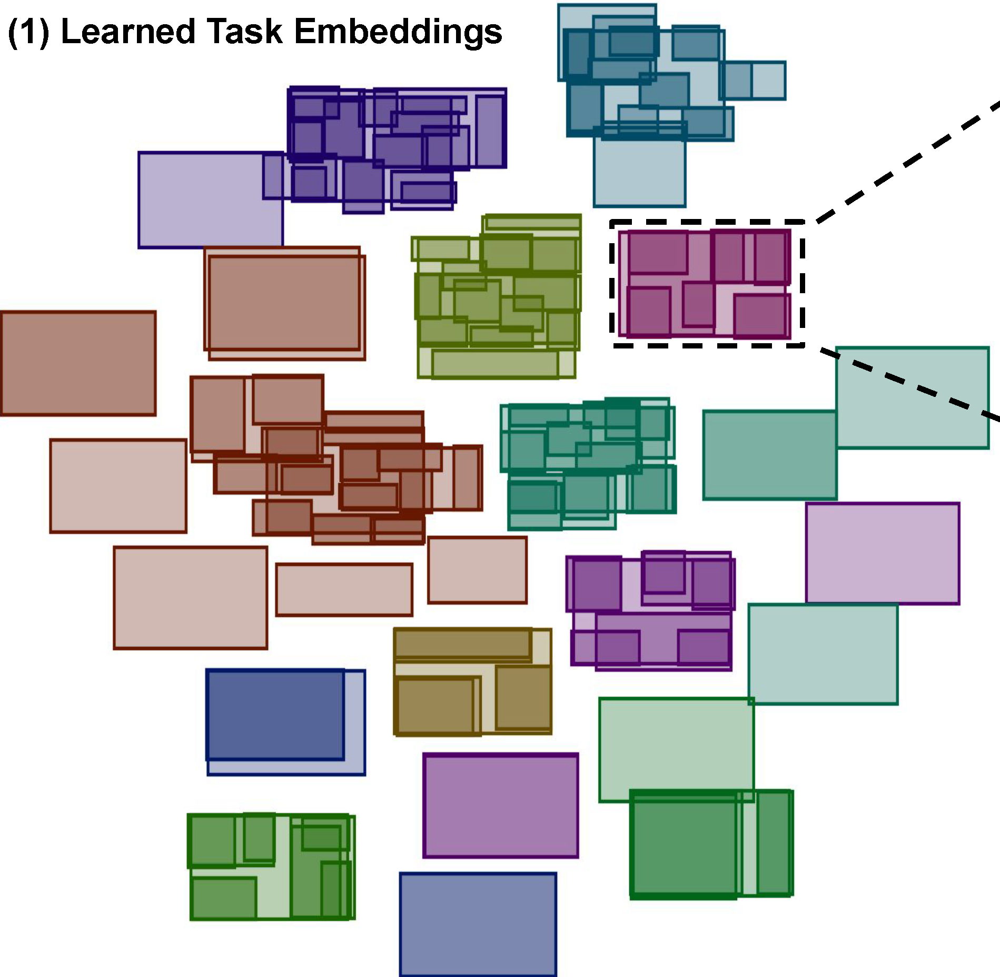
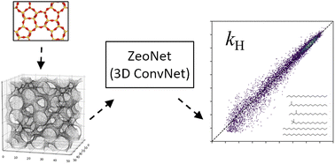
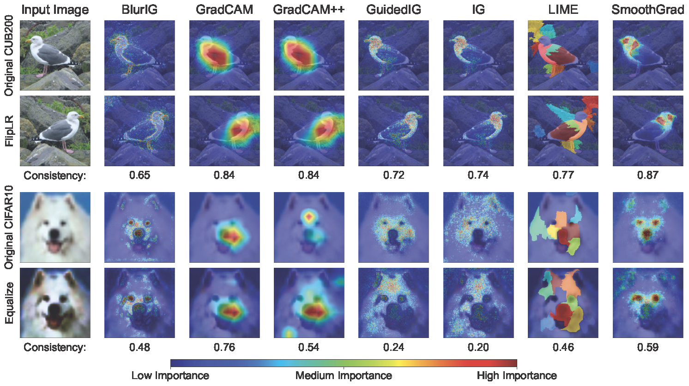

|
Aaron Sun
I'm a PhD Student at UMass Amherst studying Computer Vision under Subhransu Maji, currently focusing on semi-supervised learning with missing or weak labels in classification tasks for fine-grained domains.
Email /
CV /
Scholar /
Github /
LinkedIn
|
|
We introduce the L48 Spectrogram dataset, a fine-grained, real-world benchmark for SPML learning, and propose a new regularization method which improves existing SPML methods which suffer from incorrect assumptions on misclassifications.
-->
|

|
Task2Box: Box Embeddings for Modeling Asymmetric Task Relationships
Rangel Daroya, Aaron Sun, Subhransu Maji
CVPR 2024
project page
/
CVPR24
/
arXiv
We present a method of task representation using box embeddings and demonstrate how they are able to capture asymmetric relationships between tasks and generalize to unseen tasks.
|
|

|
ZeoNet: 3D convolutional neural networks for predicting adsorption in nanoporous zeolites
Yachan Liu, Gustavo Perez, Zezhou Cheng, Aaron Sun, Sam Hoover, Wei Fan, Subhransu Maji, Peng Bai
Journal of Materials Chemistry 2023
paper
We present a representation learning framework using CNNs and 3D volumetric representations for predicting adsorption in zeolites.
|
|

|
COSE: A Consistency-Sensitivity Metric for Saliency on Image Classification
Rangel Daroya, Aaron Sun, Subhransu Maji
ICCVW 2023
project page
/
ICCVW23
/
arXiv
We present a set of metrics that utilize vision priors to effectively assess the performance of saliency methods on image classification tasks.
|
|
{kind=link}